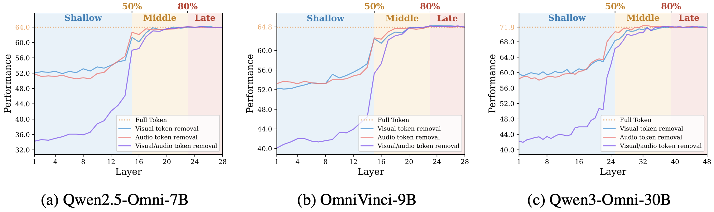
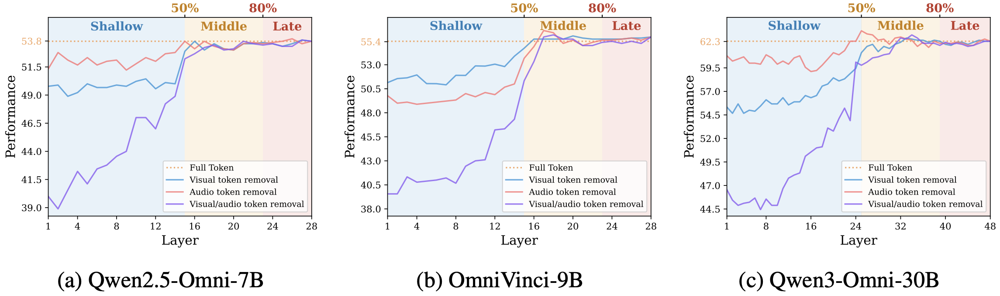

Stage-adaptive Token Selection for Efficient Omni-modal LLMs
Progressively reduce visual and audio tokens while preserving text tokens.
Every token has its moment.
We propose SEATS, a training-free, stage-adaptive token selection method for efficient omni-modal LLM inference. SEATS removes spatiotemporal redundancy before the LLM, retains the selected tokens in shallow layers, progressively prunes them in middle layers, and removes all non-textual tokens in late layers. It combines a fixed depth-proportion schedule with query-guided token budget allocation across temporal windows and modalities. At an overall token retention ratio of 10%, it preserves 94.9% of the full-token performance on Qwen2.5-Omni while achieving a 9.3x FLOPs reduction and a 4.9x prefill speedup.
Read the abstract
The unified audio-visual understanding capability of omni-modal large language models (om-LLMs) comes at the high cost of processing tens of thousands of visual and audio tokens throughout the LLM. To reduce the cost, training-free methods for om-LLM token selection are being actively developed, operating either pre-LLM or inner-LLM.
Recognizing that the non-textual token redundancy varies across stages and LLM layers, we propose in this paper a novel stage-adaptive token selection (SEATS) method that operates in both pre-LLM and inner-LLM stages. Given an overall token budget measured by the token retention rate (TRR), SEATS performs top-down token budget allocation in an input-dependent manner. Specifically, a larger TRR is used for pre-LLM token selection, while within the LLM, all tokens are retained in shallow layers, increasingly decreased TRRs are applied in middle layers, and the non-textual tokens are fully removed in late layers.
Extensive experiments on three representative om-LLMs and six benchmarks verify the viability of the proposed method. By retaining only 10% of visual and audio tokens, SEATS preserves 94.9% of the full-token performance on Qwen2.5-Omni while achieving a 9.3x FLOPs reduction and a 4.9x prefill speedup.
SEATS allocates the token budget across layers, temporal windows, and modalities.

Deeper layers. Fewer tokens.
Removing visual and audio tokens reveals a consistent block-wise dependence pattern across Qwen2.5-Omni-7B, OmniVinci-9B, and Qwen3-Omni-30B.
Shallow layers
Performance collapse
Middle layers
Moderate performance loss
Late layers
No impact on performance
Approximate depth ranges.





A smaller budget. A smarter allocation.
SEATS removes spatiotemporal redundancy before the LLM, then combines a model-agnostic block-wise TRR decay schedule with query-guided budget allocation to progressively prune tokens within the LLM. All remaining non-textual tokens are removed in late layers.
Pre-LLM Token Selection
Extends DivPrune to each temporal window and modality with attention-weighted diversity selection (winDivPrune). A larger pre-LLM retention ratio preserves more tokens for later query-guided selection.
Inner-LLM Token Selection
Retains all tokens from Stage I in shallow layers, then reduces the TRR across three middle sub-blocks with linearly increasing steps (δ, 2δ, 3δ). Query relevance guides top-down budget allocation, first across temporal windows and then across modalities within each window.
Late Removal
Removes all remaining non-textual tokens in late layers, where cross-modal fusion is largely complete, so subsequent layers process only text tokens.


Transition layers: ⌊L · p⌋ + 1, with p ∈ {0.5, 0.6, 0.7, 0.8}. The same depth-proportion schedule is used across all three models.
Less compute. Strong performance.
Extensive experiments on six audio-visual benchmarks with Qwen2.5-Omni-7B, OmniVinci-9B, and Qwen3-Omni-30B verify the effectiveness of our method.


If this work is useful to your research,
please consider citing
SEATS.
@article{xin2025seats,
title={Stage-adaptive Token Selection for Efficient Omni-modal LLMs},
author={Xin, Zijie and Yang, Jie and Zhao, Ruixiang and Wang, Tianyi and Rao, Fengyun and LYU, Jing and Li, Xirong},
journal={arXiv preprint arXiv:2605.20035},
year={2025}
}This research was supported by NSFC (No.62576348), BJNSF (No.L254039), Tencent WeChat Rhino-Bird Focused Research Program, and the Outstanding Innovative Talents Cultivation Funded Programs 2025 of Renmin University of China.